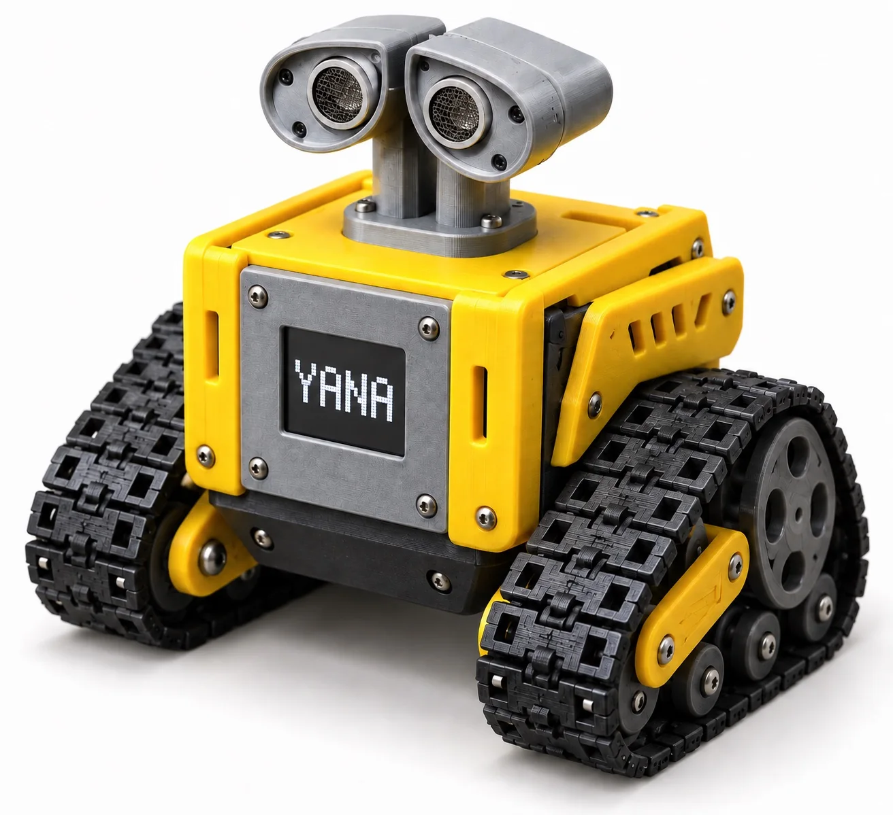
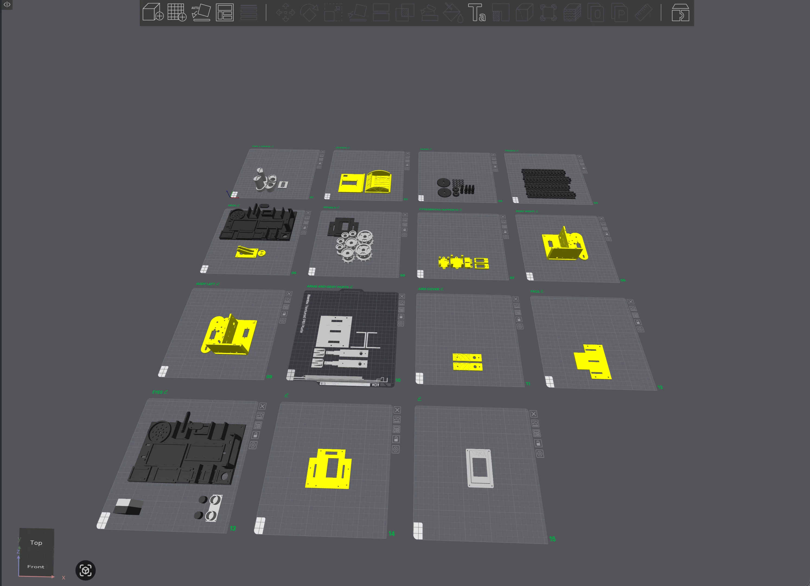

Grant exactly the right capability.
An agent can only call tools and paths inside the declared scope. Authority does not expand on its own because of a model's answer.
Learn about Governance ↗
Checking permissionsApproved · come in
The model proposes. Yana checks permissions. Any command that needs approval waits for your click.
One command through Yana
The model proposes. Yana checks permissions. You approve, then it runs. Every step goes into the audit.
TRY YANA · 5 STEPS
Try one small task: change a page title. Go from request to proposal, decide the permission yourself, then see the result and the evidence.
01 / Assign
One small task shows the whole flow: edit a title in a file of a sample project.
Change the page title to “Hello, Yana.”
02 / Proposal
Yana shows the intended change and its exact scope so you can review it before granting permission.
demo/index.htmlfile.write− <h1>Hi there.</h1>+ <h1>Hello, Yana.</h1>03 / Authority
Allow once, ask for more confirmation, or block. Each choice leads to a different result.
04 / Result
When allowed, the example edits only the proposed line. When blocked, the sample file stays as it was.
Allowed: one line was changed in the example.
− <h1>Hi there.</h1>+ <h1>Hello, Yana.</h1>Blocked: the sample file did not change.
<h1>Hi there.</h1>05 / Evidence
Compare the request, scope, decision and result. You can go back and try a different choice.
file.write · demo/index.htmlThis is a prepared example that illustrates Yana's flow. It does not call an AI, run commands or edit files on your machine.
START THE TOUR
Follow Yana from the first conversation to an ecosystem you can inspect.
YANA IN 20 SECONDS
A request from a model does not automatically become a command. Yana puts authority, granted capabilities and evidence into one flow.
See the full architecture ↗Proposes an action and the capability it needs.
Checks authority, scope and policy.
Approves when an action needs a decision.
Runs within the allowed scope; keeps the result for review.
The model can change. Execution authority is still defined outside the model.
NEXTWhere did Yana begin?↓FROM TERMINAL TO RUNTIME
That was the first way to interact: talking to the AI right where the work happens. When the AI needed to touch files and tools, Yana grew a runtime layer to control its actions. Studio came later, bringing the same workflow to a visual interface.
Learn about Yana Runtime ↗NEXTFrom terminal to ecosystem↓ONE ECOSYSTEM · NOT JUST ONE APP
Yana is a space where AI, software tools and physical devices work together under one principle: the intelligence can change, but the authority to decide stays with people.
Connects models, tools and files through one layer of authority. A proposal becomes an action only when the capability is allowed.
↗Yana StudioWORKSPACEA visual workspace for conversations, projects, files, the terminal and execution permissions.
↗Yana WheelbotPHYSICAL AIAn ESP32-S3 robot with public source and technical scope; the physical robot has not been tested.
↗01 / YANA AI
Connects models, tools and files through one layer of authority. A proposal becomes an action only when the capability is allowed.
Explore Yana AIThe model creates a proposal and names the capability it needs.
02 / YANA STUDIO
Editor, project and Yana AI in one IDE on Mac. Yana reads code with you; shell commands and every file write pause for your approval, then go into the audit.
Explore StudioOpen a project folder, read and edit files right in Studio; Yana sees the same context you do.
03 / YANA WHEELBOT
Wheelbot is the ESP32-S3 robot branch. The published source states its technical boundaries and current development status.
Explore Wheelbot

CORE CAPABILITIES
Yana turns operating boundaries into steps you can see and inspect.
An agent can only call tools and paths inside the declared scope. Authority does not expand on its own because of a model's answer.
Learn about Governance ↗Requests pass through the authority layer. When a user decision is needed, execution pauses and waits for approval.
See Safety ↗Proposals, decisions and results can be traced through the record and the evidence receipt.
See Evidence ↗Cloud and local models connect through one orchestration layer; execution authority stays with Yana and the user.
See Models ↗ARCHITECTURE · FROM PROPOSAL TO EXECUTION
Studio and the other surfaces send work into the same system. TurnEngine, the authority layer and the execution tools each have their own job.
Read the technical architecture ↗The audit chain and evidence receipts record what happened. Wheelbot is a separate branch; its page states clearly what has and has not been verified.
EVIDENCE · INSPECTABLE
We only describe mechanisms that leave a trace in the project; we do not use unverified numbers.
USE CASES
Agents read, edit and run tools in a project; sensitive operations go through approval.
The workspace, local models and the terminal all stay within the user's view.
Connect models, files and services through capabilities with their own scope.
WHY YANA
Permissions are checked by a defined mechanism.
Ties decisions to records and results.
Allows local workflows when they fit.
Swap the source of intelligence and keep the authority boundary.
03 · WHAT HAS BEEN PUBLISHED
This website only presents products that have real grounds. Runtime, Governance, Agents, Models and Integrations are foundation layers; they are not presented as separate products.
Runtime, authority, guardrails, evidence and orchestration layers sit behind the surfaces people use.
Explore Yana AI ↗DESKTOP WORKSPACEA visual space for chat, projects, files, the terminal, models, connectors and execution permissions.
Explore Studio ↗PHYSICAL AIThe ESP32-S3 robot branch, with its own repository and separately published technical boundaries.
Explore Wheelbot ↗